Shower & Bathroom Wall Panel Installation — No Demolition
Damaged, cracked or leaking shower tile? We glue 100% waterproof vinyl wall panels, in marble and stone looks, directly over your existing tile. No demolition, no dust, no grout — a fully waterproof, upgraded shower in 1–3 days, at a budget-friendly price.
- Installs over existing tile
- Waterproof vinyl panels
- 100% waterproof
- No grout lines
- Done in 1–3 days
- Commercial & residential
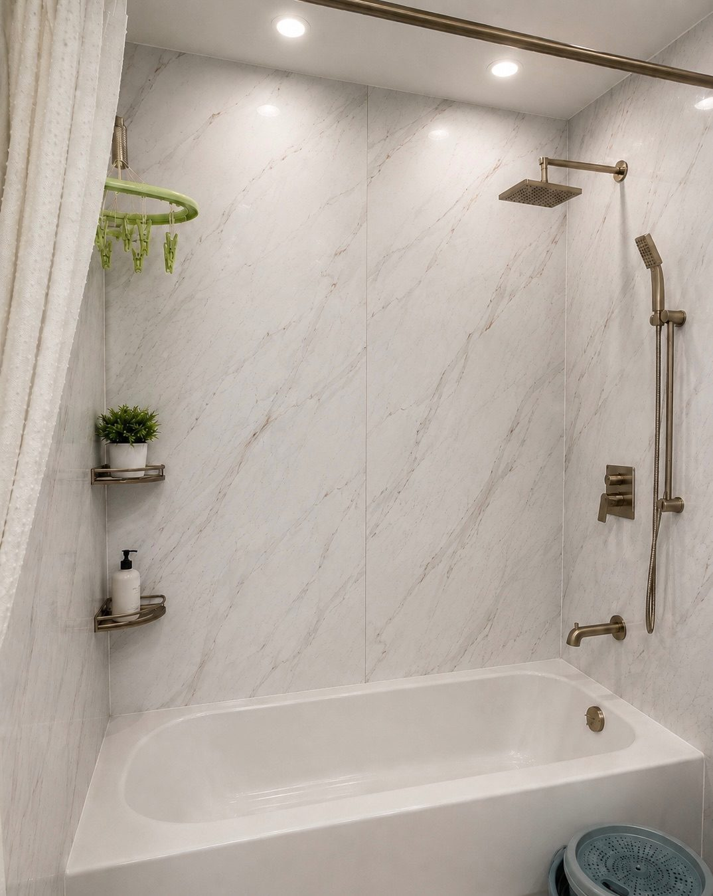
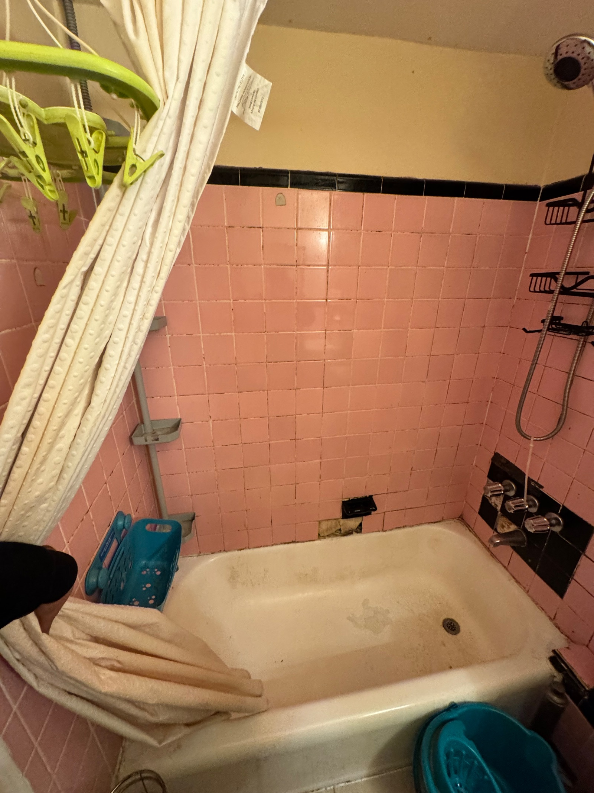
Drag to reveal the transformation — same walls, no demolition.
What are bathroom wall panels?
Bathroom wall panels are large, 100% waterproof vinyl boards with a high-definition marble or stone look. We glue them directly over your existing shower tile, so your old, cracked or stained tile disappears behind one smooth, grout-free wall — without tearing anything out.
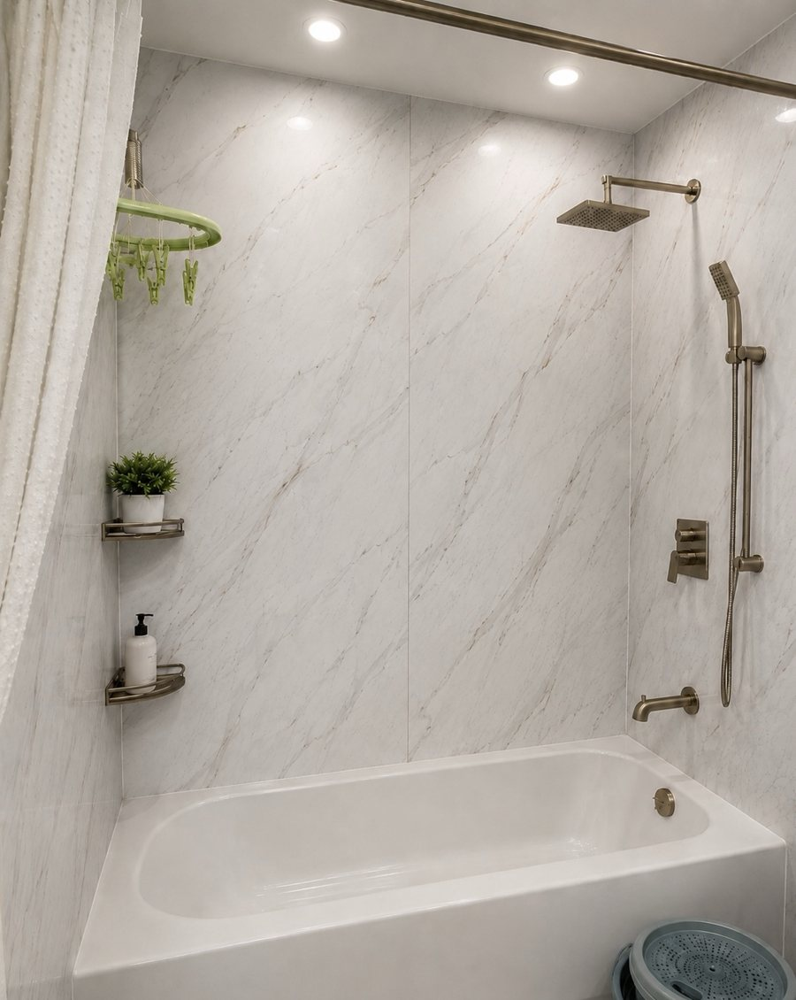
Wall panels are right for you if…
- Your shower tile is old, cracked, stained or out of style
- Grout keeps cracking, turning black or letting water through
- You want a new-looking shower in days, not weeks
- You want no dust, no demolition and a lower price
- You are a landlord or manager turning over a unit
Something else may fit better if…
- The shower floor or pan is leaking — see shower waterproofing
- You want to remove the bathtub — see bathtub to walk-in shower
- You want to move plumbing or change the layout — see full bathroom renovation
- You only need new grout — see grout repair
Not sure? Send us a photo of your shower and we will tell you for free.
A modern bathroom, minus the gut renovation
You keep the walls you have. We give them a high-end, fully waterproof surface — fast, clean, and built to last.
Installs over tile
Panels bond directly to your existing tile and walls — no chipping, no opening up the room.
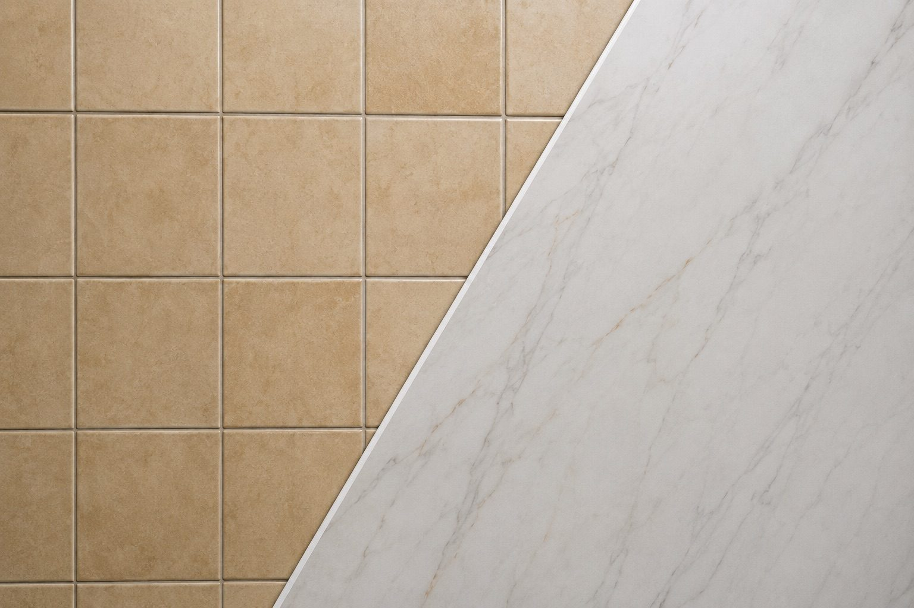
No major demolition
No jackhammers, no dumpster on the curb, no debris hauled through the building.

100% waterproof
Sealed seams make panels ideal for shower walls and wet areas.
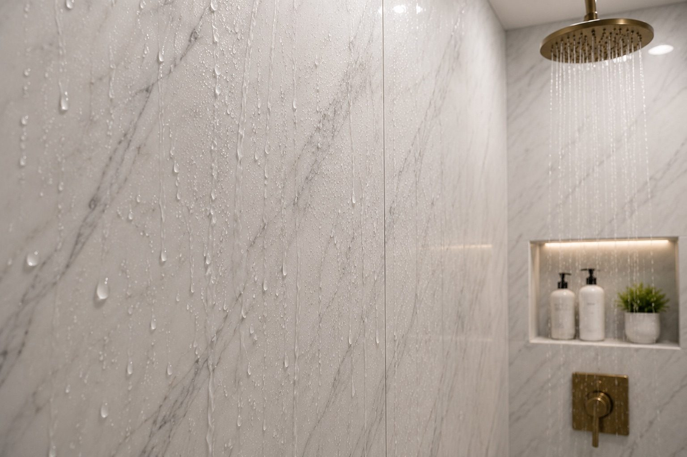
No grout lines
A continuous seamless surface — nothing for mold or mildew to hide in.
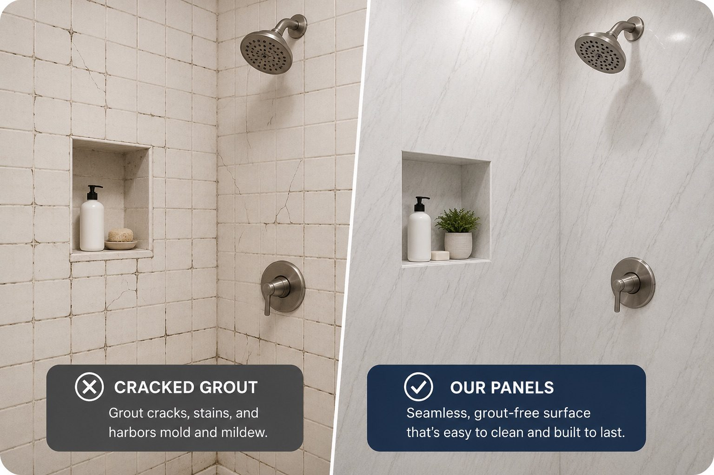
Easier cleaning
Wipe down a smooth panel instead of scrubbing dozens of grout joints.
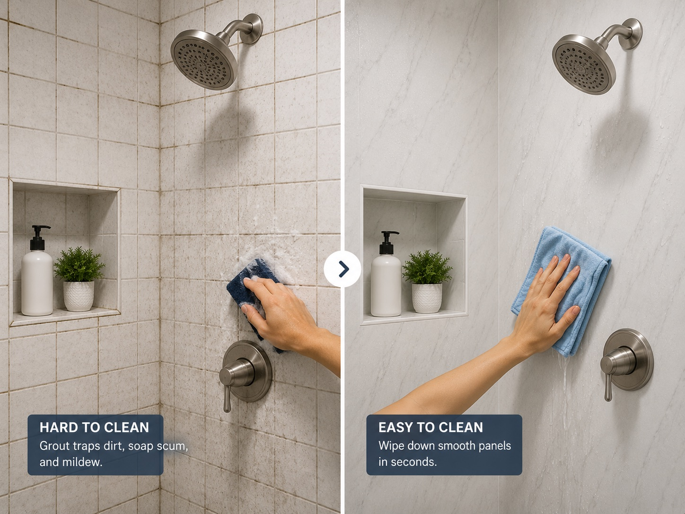
Marble & stone look
Large 3 ft by 7 ft panels in marble and stone looks.
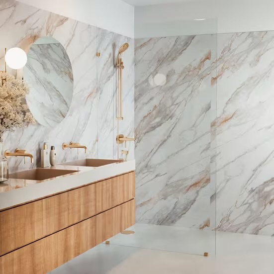
Done in 1–3 days
The bathroom is usable again in days, not weeks.
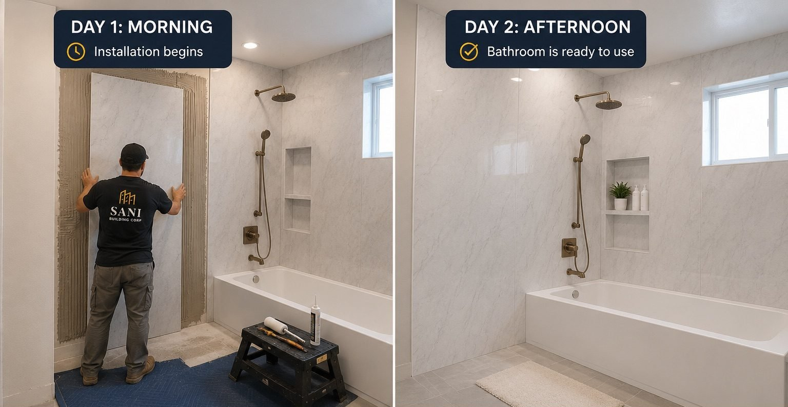
Lower cost
No demo or re-tile labor means a premium look for less than a full remodel.
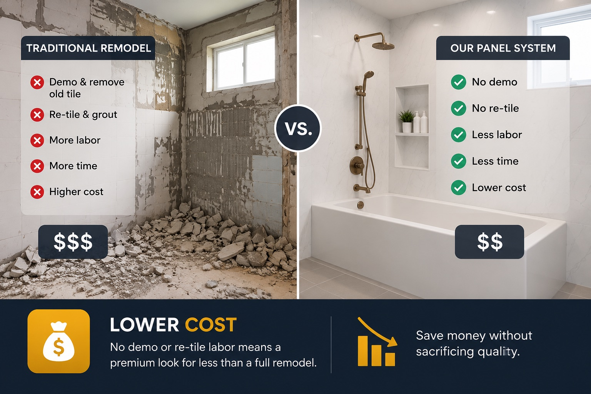
Six marble and stone finishes
These are the panels we install. Tap a finish to see it larger. Each panel is 3 ft wide and 7 ft tall, so a shower wall needs only one or two panels — no grout lines.
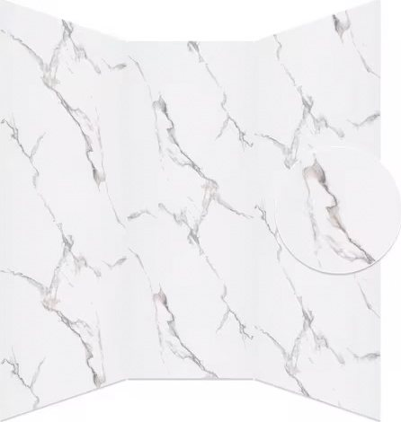
Four layers doing the work
These aren't thin peel-and-stick sheets. Each panel is a rigid, multi-layer vinyl board built for wet rooms, thin enough to go right over your existing tile and strong enough to stay flat and sealed for years.
- Protective top layerA clear, scratch- and stain-resistant coat that wipes clean.
- Realistic stone-look layerHigh-definition marble and stone visuals — the part you see.
- Durable stability layerKeeps the panel flat and dimensionally stable through temperature swings.
- Waterproof rigid coreA 100% waterproof rigid base — the structure that makes it shower-ready.
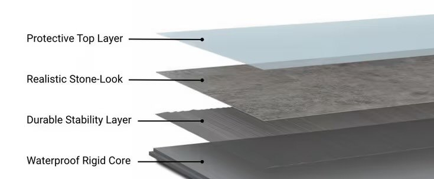
Panel specifications
Everything that makes these panels right for a bathroom — at a glance.
Traditional renovation vs. wall panel refresh
Same goal — a beautiful bathroom. Very different week.
Traditional bathroom renovation
Bathroom wall panel refresh
Glued straight over your existing tile
Your old tile stays on the wall. It becomes the solid base for the new panels — nothing is chipped out, so there is no dust, no debris and no dumpster.
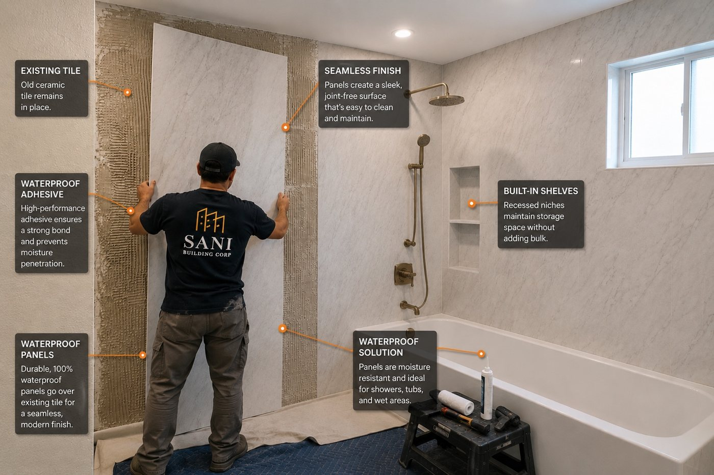
- Clean the surfaceThe old tile is cleaned and checked so the panels bond well.
- Measure and cutEach panel is cut on site to fit your walls, valves and niche.
- GlueWaterproof adhesive goes on, the panel goes up. Tongue-and-groove edges lock panels together.
- CaulkCorners and edges are sealed with 100% silicone caulk. Done — no grout.
A grout-free alternative to shower tile
Grout cracks, stains and lets water in. Shower wall panels give you a waterproof shower surround with no grout lines at all, in 1–3 days. If water is already getting behind the tile, it is not always the walls — a leaking shower pan or drain has to be fixed first, and panels would only hide it. We check that at the estimate, and do the repair when it is needed: see shower waterproofing & shower pan replacement. Prefer to keep your tile? Regrouting may be all it needs.
From dated to done in five steps
A clear, predictable process with arrival windows you can plan around.
Inspection
We check your existing tile and walls to confirm panels are a fit.
Measurements
Precise measurements so panels arrive sized for your bathroom.
Panel selection
Choose your finish — white, Carrara, gold-vein or grey marble, cream or grey stone.
Installation
Tongue-and-groove panels lock over the tile and seal at the seams — clean, quiet, fast.
Finished bathroom
A seamless, waterproof, modern bathroom — usually within 1–3 days.
The fastest way to turn over a tired bathroom
Between tenants, every day a unit sits is lost rent. A wall panel refresh delivers a clean, modern bathroom in 1–3 days — without a multi-week renovation tying up the unit or disrupting neighbors.
- ⚡Fast turnovers. A refreshed bathroom between tenants in 1–3 days.
- 🏢Building-friendly. No dumpster, no debris through shared halls and elevators.
- 📈Higher appeal. A marble-look bathroom photographs and shows better.
- 🔁Repeatable across units. One reliable process for a whole portfolio.
Upgrade a Commercial Bathroom Without Closing for Weeks
Manhattan restaurants, national-brand beauty retail stores, medical clinics, and offices — a wall panel refresh gets your bathroom looking premium again in 1–3 days. No demolition. No dumpster in the hallway. Open the next morning.
Restaurants & Bars
Restaurant bathroom needs upgrading but you can't afford 3 weeks of construction? We install panels overnight. Grout-free surface — easier for staff to clean and maintain. Open the next day.
Retail Stores & Showrooms
Beauty retailers, boutiques — retail bathroom must look premium. A wall panel refresh is fast, clean, and creates a marble-look that matches high-end brand environments. Weekend install, back open Monday.
Medical Offices & Clinics
No grout lines means no place for bacteria to hide. Panels are sealed, waterproof, and wipe clean — ideal for healthcare restrooms. Installation scheduled around patient hours.
Offices & Buildings
Office restrooms see heavy use — panels hold up. Evenings and weekend installations mean no disruption to staff. Property managers use us for full building portfolios.
Tell us your hours. We schedule installation around your business — so you never have to close.
Get a free bathroom panel estimate
Tell us about your bathroom and we'll recommend a finish and a timeline. Serving Brooklyn and all five NYC boroughs, plus Long Island and Nassau County.
Frequently asked questions
Yes. In most bathrooms the existing tile becomes the backing for the new panels. As long as the tile is reasonably sound and the wall is flat, we bond the waterproof panels right over it. There is no need to chip off old tile or open up the walls, which is what removes the dust, debris and dumpster from the job.
Most standard NYC bathrooms are completed in approximately 1 to 3 days. Because there is no demolition, drying time or re-tiling, the bathroom is usable again far sooner than a traditional renovation that can run several weeks.
Yes. The panels are 100% waterproof and are sealed at the seams, so they are suitable for shower walls and wet areas. With no grout lines, there is nowhere for water, mold or mildew to work into, which is also why they are far easier to clean.
We install six looks: bright white marble, soft Carrara, gold-vein marble, grey and taupe marble, cream stone and soft grey stone. Each panel is 3 ft by 7 ft, so a shower wall has only one or two panels and no grout lines, for a modern high-end appearance.
Generally yes. Because we eliminate demolition, debris removal and the labor of re-tiling, a wall panel refresh typically costs less than a full gut renovation while still delivering a modern, premium look.
It is one of the best options for landlords, property managers, co-ops and condos. A clean modern bathroom can be delivered between tenants in 1 to 3 days with minimal disruption to the rest of the unit or building, helping you turn the unit over quickly and raise its appeal.
Yes. Because the panels are 100% waterproof and sealed at the seams, they work as shower wall panels and tub-surround panels in wet areas — a fast, grout-free alternative to traditional shower tile, with no grout lines for mold or mildew to grow in.
They are rigid-core vinyl panels, 100% waterproof, with a protective top layer, a realistic marble or stone look, a stability layer and a waterproof core. They are made for showers and wet rooms and go directly over existing tile, so no demolition is needed.
Yes. Panels give you a waterproof shower wall with no grout lines — nothing to crack, stain or regrout — and most showers are done in 1 to 3 days, far faster than re-tiling. If you would rather have tile, we do that too.
Only when the water gets in through cracked grout or tile joints on the walls — panels seal over those. If the shower pan, drain or valve is leaking, panels would only hide the problem, so we repair the leak first with shower waterproofing or a shower pan replacement.
Very little. The panels are 3 ft wide and 7 ft tall, so a shower wall usually has one or two joints. The long edges are tongue and groove and lock together tightly, and the corners and edges are sealed with 100% silicone caulk. There are no grout lines.
No. There is no grout to seal, regrout or scrub. You clean the panels with a soft cloth and a normal non-abrasive bathroom cleaner. Over the years, only the silicone caulk at the corners may need to be refreshed.
Over all three, as long as the wall is solid and flat. Most of our jobs go over existing shower tile, which makes a strong, flat base. If the tile is loose or the wall behind it is soft or wet, we fix that first.
Yes. Sani Building Corp is fully insured, and our wall panel installation carries a 3-year workmanship warranty.
Sani Building Corp is based in Brooklyn and serves all five NYC boroughs — Brooklyn, Manhattan, Queens, the Bronx and Staten Island — plus Long Island and Nassau County.
Yes — this is one of the best uses for wall panels. Restaurant bathrooms need to look clean and modern, and the no-grout surface is far easier to maintain than tile. We can schedule the work in the evenings, overnight or on weekends to keep disruption to your service as low as possible.
Yes. We regularly work in retail stores, showrooms, medical offices, and commercial buildings across Manhattan and NYC. We work evenings and weekends to fit around your business hours. Fully insured for commercial work.
Yes. If your space needs full tile installation rather than a panel overlay, we also provide commercial tile installation for restaurants, retail, offices, and medical clinics throughout NYC.
All bathroom services
Other bathroom services
Our own team for every bathroom job, from a small grout repair to a full renovation.
 Full Bathroom RenovationA whole new bathroom: layout, tile, vanity, fixtures. Start to finish.See this service →
Full Bathroom RenovationA whole new bathroom: layout, tile, vanity, fixtures. Start to finish.See this service → Bathtub to Walk-In ShowerNo more stepping over the tub. A safe, low-entry shower, ideal for seniors.See this service →
Bathtub to Walk-In ShowerNo more stepping over the tub. A safe, low-entry shower, ideal for seniors.See this service → Bathroom Wall Panels (No Demo)Waterproof vinyl panels glued over your old wall tile. Done in 1–3 days.You are here
Bathroom Wall Panels (No Demo)Waterproof vinyl panels glued over your old wall tile. Done in 1–3 days.You are here Bathroom & Shower TileNew floor or shower tile, laid flat, waterproofed and sealed.See this service →
Bathroom & Shower TileNew floor or shower tile, laid flat, waterproofed and sealed.See this service → Shower Waterproofing & LeaksWater stain below the bathroom? We find the leak and fix it at the source.See this service →
Shower Waterproofing & LeaksWater stain below the bathroom? We find the leak and fix it at the source.See this service → Grout Repair & RegroutingCracked, dirty or moldy grout renewed, without replacing the tile.See this service →
Grout Repair & RegroutingCracked, dirty or moldy grout renewed, without replacing the tile.See this service →Guides: Tile installation cost · Commercial tileAreas: Brooklyn · Manhattan · Queens · Bronx · Staten Island